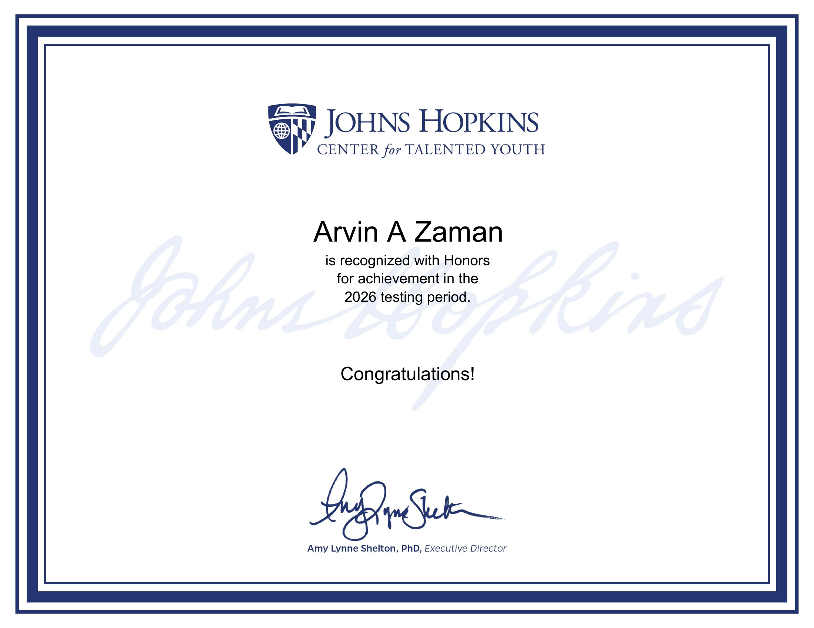
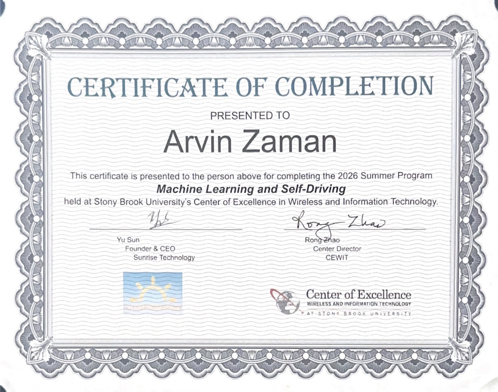
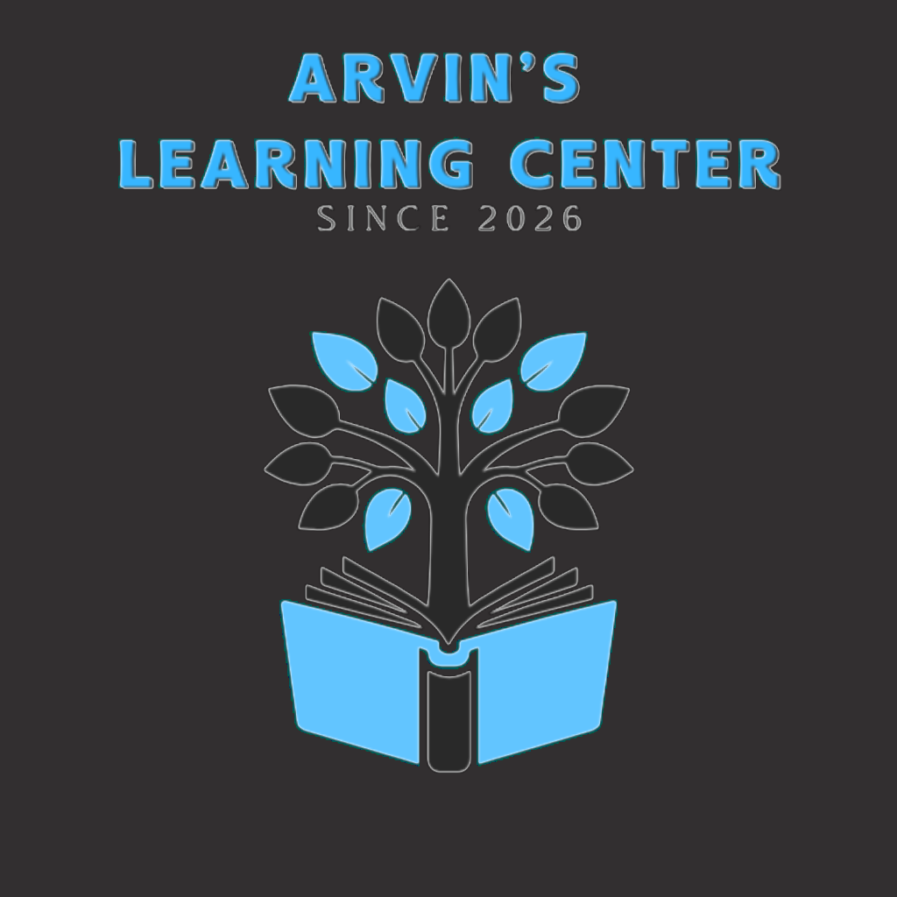

About Me
Hello, my name is Arvin, and I am a student at New Hyde Park Memorial High School with strong interests in programming, mathematics, science, and medical sciences. I have experience programming in Python, Luau, Java, and JavaScript, and I enjoy using these skills to create projects, solve problems, and explore new areas of technology. Throughout my academic journey, I have consistently achieved an an average of 98% and higher and reached numerous academic milestones, many of which are showcased in my Gallery. Looking toward the future, I plan to continue my education in engineering and medical science, particularly in areas where the two fields intersect. I am interested in fields such as biomedical engineering, medical technology, robotics, prosthetics, and the development of innovative medical devices. These fields would allow me to combine my interests in technology, mathematics, science, and problem-solving to develop solutions that can improve healthcare and people's lives.


Experience

In the summer of 2026, I completed a program through Stony Brook University’s Center of Excellence in Wireless and Information Technology (CEWIT) focused on Machine Learning, Artificial Intelligence, and Self-Driving Technology. During the program, I learned how to develop and train machine-learning and artificial-intelligence models to autonomously control a remote-controlled car as it navigated a track. I explored the systems involved in machine learning, AI, and autonomous driving, including how models are trained, how data is used to make predictions, and how those predictions can be applied to real-world control systems. As part of the program, I also learned to use Claude Code as an AI-assisted development tool to support coding, debugging, and working with software projects. I was the youngest participant among everyone who successfully completed the project, and my team achieved podium finishes multiple times during track-completion challenges. This experience gave me a deeper understanding of the technologies and processes behind modern artificial intelligence and autonomous systems.
I have also begun volunteering at an internal medicine primary-care practice in New Hyde Park, where I am gaining firsthand exposure to the healthcare field. Through this experience, I have been learning about patient care, medical statistics, scheduling, and reception operations, while developing a better understanding of how a medical practice functions and serves its patients.
This summer, I also received Honors for Achievement during the 2026 testing period from Johns Hopkins University’s Center for Talented Youth (CTY). This recognition reflects my academic performance and continued dedication to learning.
During the 2025–2026 school year, I also developed hands-on scientific research experience as part of a team working on a months-long research project titled “The Effects of Foam Paneling Aesthetic on Sound Absorption and Frequency.” Our research investigated how different polyurethane foam paneling designs affected sound absorption and frequency within a controlled environment. Throughout the project, I worked with my team on experimental design, constructing our testing apparatus, collecting measurements, analyzing data, and comparing the results across different foam designs and frequencies. This experience introduced me to the process of conducting a long-term scientific investigation and strengthened my skills in data analysis, experimentation, collaboration, and scientific communication. Our work was presented as a research poster documenting our methodology, results, conclusions, sources of error, and opportunities for future research.
I have been learning and programming in Python for over a year and a half, and I have completed several certifications through classes and online courses. During this time, I have worked on projects ranging from smaller Object-Oriented Programming (OOP) exercises to more advanced applications.
One of my more complex Python projects was a complex automation script for a fishing minigame, which incorporated computer vision with OpenCV, a graphical user interface built with PySide6/PyQt5, and libraries such as JSON, sys, os, and math. This project gave me experience combining multiple libraries and technologies while designing a functional application.
I also have extensive experience with Roblox Luau programming. I have created games using advanced scripting, including systems involving gameplay mechanics, classes, abilities, and other interactive features. I have also completed smaller projects using Object-Oriented Programming in both Python and Luau.
In addition to programming, I have experience using GitHub and understand the fundamentals of Git, including managing repositories and working with version-controlled projects.
Outside of programming, I have received several school awards for mathematics, which have strengthened my problem-solving and logical-thinking skills.
My most recent major project is Block Battle, a browser-based multiplayer fighting game supporting both two-player and single-player gameplay. Players control blocks with different classes and abilities and fight using unique gameplay mechanics. After testing the game with friends and continuously expanding its systems, the project has grown significantly in complexity and has become one of my largest programming projects so far.
My certificates, awards, and academic achievements are showcased in the Gallery for reference.